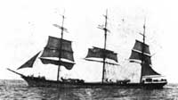

|  |
|
Our Rob(b)ins ancestry is traced back to the early 1700’s, starting in Hartwell (Northamptonshire, England). In the middle of the 1800’s the family lines moved around the district of Hanslope(BKM)/Hartwell(NTH) and then to Crewe (CHS). The surname was recorded as ‘Robins’ during the 1700’s, with two b’s becoming common during the later 1800’s particularly for our family line who moved to Crewe. Direct descendants of Eli and Mary (nee Caucutt) Robbins immigrated to Australia, where a large family tree now exists. |